Project N5; December 2023 Progress
My progress in December 2023. Updates are shown in reverse chronological order.
Simultaneous Animations
I managed to implement the ability to play multiple animations at a time! The character can now walk + point its gun, or keep its arms down. There's no animation for standing still yet, so it perpetually walks, but this is huge progress, and more importantly, a huge fear of mine alleviated! I was really concerned that implementing multiple animations would be a tedious task, but with Godot's AnimationTree node, it's actually rather trivial.
I followed this extremely useful and concise tutorial.
Worldbuilding – Toasters
Adapted from the early animations, I present: Deniz' Quality Toasters! A fictitious toaster manufacturing company bearing my name – maybe they manufacture more than just toasters? The logo is using the font Pacifico.
I don't actually know whether I'll use this in any way, I just wanted to create this logo for the sake of it.
Character II
For testing animations, I created a new rigged character. This character is segmented, using separate objects for its arms, fingers, legs, etc. The final protagonist will use completely separate objects, since the character will be a robot. This will also reduce the work I will need to do in weight painting, and make mesh bends trivial – which is to say, not necessary.

Rigging remains as difficult as ever. The final model – which won't be based on this model but use a similar rig, hopefully the same so that animations can be carried over 1:1 – will have separate segments for the fingers, so that bends like this will never occur.
Notice that the character only has four fingers per hand. This should reduce animation work somewhat. Also, I came to realise – why even put five fingers on a robot? It's not like we as humans even utilise our five fingers very efficiently. I've found myself struggling to keep my pinky out of my way countless times.
hello world! nice to meet you
This uses 1-frame animations to achieve posing. My first attempt at using animations in Godot! Worked really well, actually. All I fear now is playing multiple animations at once. Is that even possible? I don't know yet.
And finally, a shot of the character holding the weapon correctly. This was actually super easy to achieve. The weapon is parented to a node that's attached to the right hand bone of the model. This makes posing and animations loads easier, since the equipped item does not have to be moved manually.
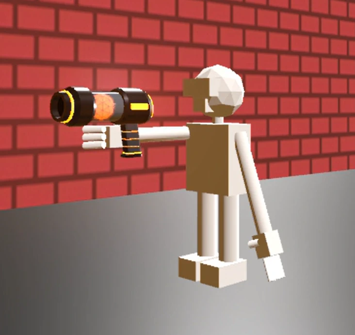Glowing Weaponry
I was struggling for SO LONG to get this weapon to glow. Using a WorldEnvironment node just wouldn't work, the weapon never glowed. Then, I figured out that, at some point, I disabled glow in the entire scene... and after changing that – and trying other things for 1.5 hours before that point – the weapon was glowing! Not quite the way I want it to, but that's easy to tweak. Only downside is that my character started glowing as well, for some reason, but I'll figure that out another time.
Identity Crisis
I started creating a logo for my game! I settled on the name Project N5 as a working title, and perhaps as a final title for the game as well. Here's all the logos I created thus far:
Logo #0 is just an outline using Kanit. This is the font I also decided on for all of the in-game menus and text. The 5 is special though; it is based on a part salvaged from a hard drive. On a slow day, my coworker disassembled some defective mechanical hard drives, and I got to keep the parts. I thought it would look quite cool as a highlight for the game's logo, and perhaps function as a part of the in-game antagonist company that I'm planning to write the story around.
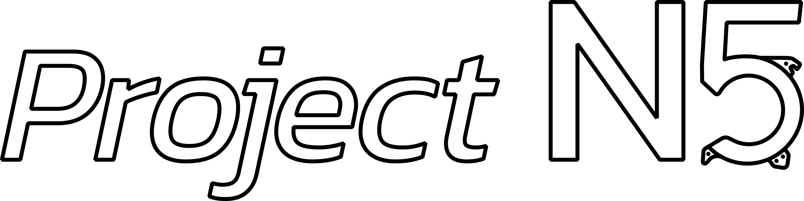 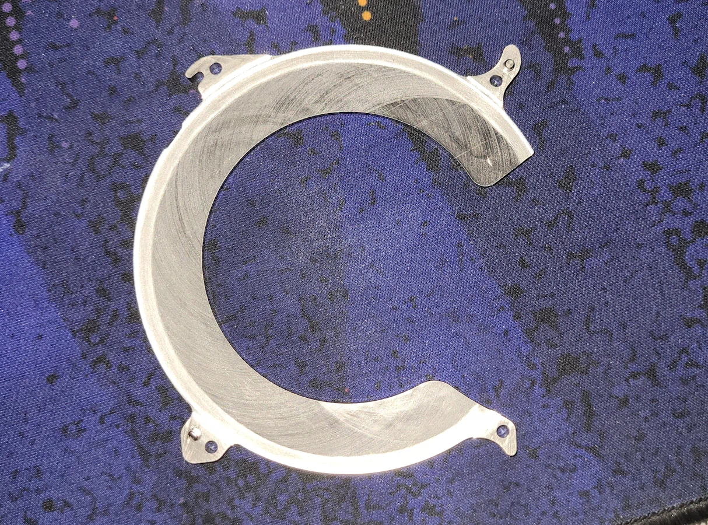Logo #1 gained a fill, wider stroke, and a pattern fill that's straight outta Inkscape.
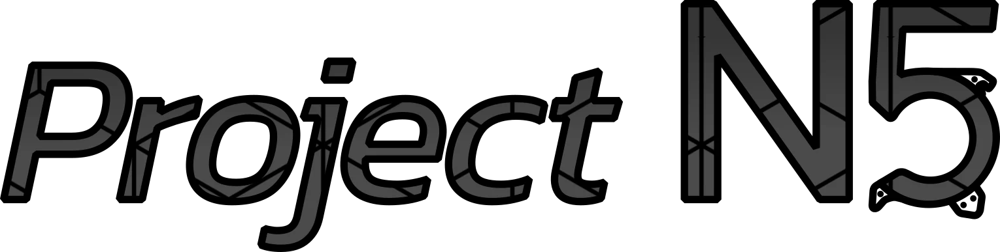#2 reserves the pattern fill for the N5 part and colours the 5 in the game's main yellow colour, #D4AB49. It's also much thicker.
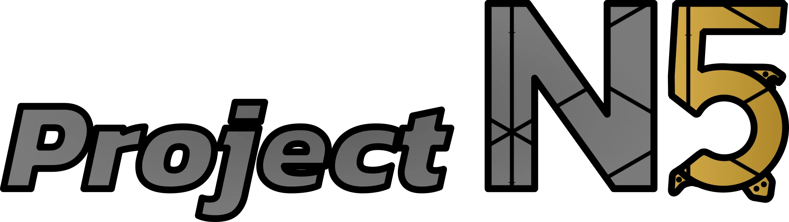Version 3 is a complete overhaul, still using Kanit for the N, keeping the custom 5, but changing the font of the word 'Project' to Apfel Grotezk. Unfortunately, that font doesn't really work well in all-caps. The J just stood out too poorly for my liking, and friends comfirmed it.
The hexagonal background behind the N5 actually was a fairly random addition, but I liked it so much that it continued to stick. I think this could also serve as part of the player's HUD. Maybe as an element that shows the level of the currently equipped weapon? I love when ideas sprout from random decisions like this!
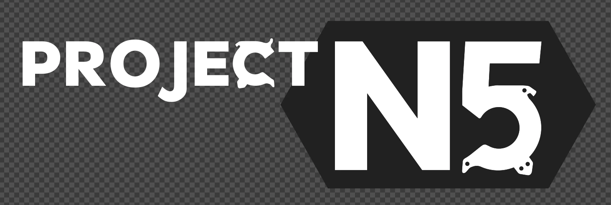I also tried Lato, but that looked too standard, and not quite as expressive as I wanted it to. Relatively speaking, considering we're talking about regular sans-serif fonts, of course.
A friend also suggested I cut apart the top part of the 5, leaving a gap, and I think that looked quite cool! I continued that trend for the HDD-inspired bits on the lower part of the 5, simplifying them, detaching them from the main bottom part, and even removing one element. The element that was removed actually served as the part that sticks out in the upper part of the lower part – if that makes sense. It's now located near the cutting point between the upper and lower parts of the digit.
I also tore apart the N on my own volition. Thought it looked cool.
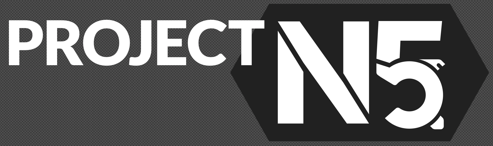This logo uses Monserrat ExtraBold. I actually quite liked this font; it looked unified, bold, and actually quite fitting for my vision!
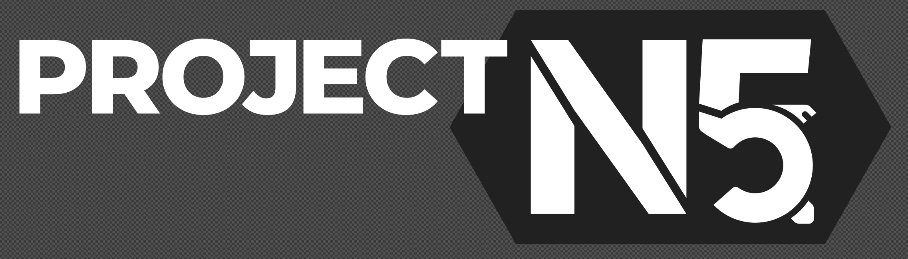Then I inset the C into the T, creating a neat little cutout effect.
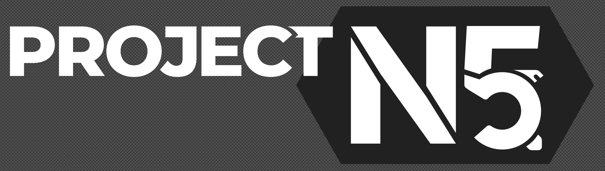I then decided to put a splash of colour behind the 'Project' wordmark, and highlighting the background with two hexagons.
Do you think the comment is right? I'm unsure. Amongst all the people I've shown this logo to, the decision has been split 50/50. I just don't want people to consider this the 'dick logo.'
I've also received comments from some people who are irked by the T in 'Project' overlapping with the background of the N5. I actually quite like that feature, but I'll take it into consideration, and maybe change it in the near future.
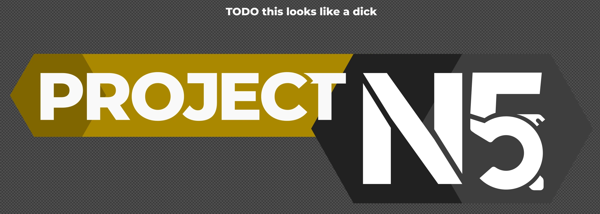And lastly, a little draft logo I created, based on #7, in Paint.net, which is why it doesn't look as clean as the other ones, which are all vector-based logos created in Inkscape.
I want my work to be transferrable and easily scale-able after all, you know?
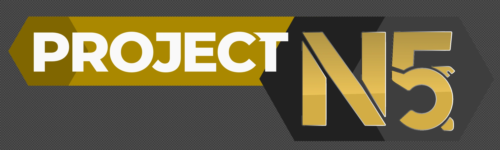